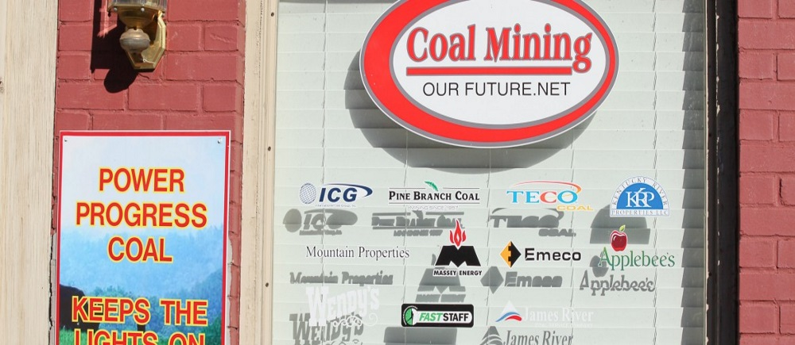
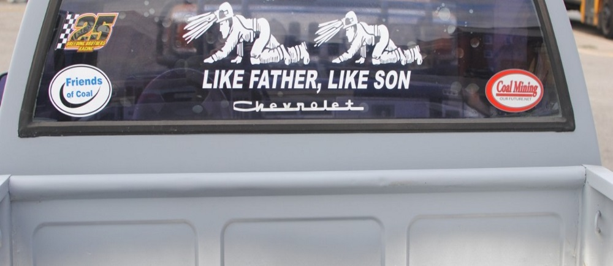

Toggle navigation
Erica M. Peterson
About
Portfolio
Contact
Is Fracking Coming to the Cumberlands?
Forget Greenhouse Gas Rules Nearly 60 Percent of Kentuckys Coal Plants May Be Gone by 2040

Kentucky Doesn’t Have Any More Working Union Coal Miners

Hollowed Mountains, Now Hollowed Towns: Coal in Eastern Kentucky
As Pain Pills Change, Abusers Move To New Drugs
Rubbertown and Health: The Whole Series
Black Carbon Series: How Traffic Exhaust Affects Climate Change and Louisville’s Health
How the Fastest-Warming City in the Country Is Cooling Off
The Challenges of Increasing Louisville’s Tree Canopy